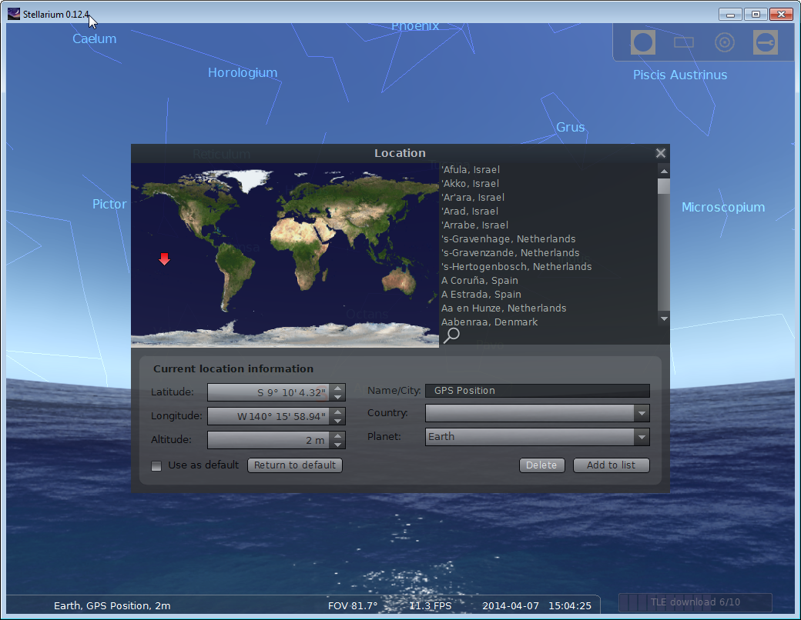
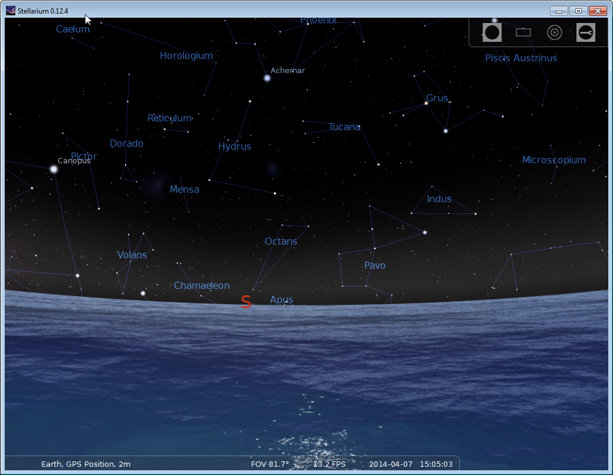

The idea of this user exit comes from Navigatrix.
Stellarium does not provide a possibility to plug a GPS, or any device that would deliver the current location of the user.
But in Stellarium, you can define your own custom positions, that will be stored in a file named user_locations.txt (the location of this file varies with the system).
When a GPS is connected to the machine, Navigatrix writes the current location in some specific files.
Stellarium is launched from a script that will first add the current position - based on the files above - to the user_locations.txt file.
If this location has been set to the default one, then when Stellarium opens, it is located at the current location of the user.
The Stellarium user exit more or less does the same thing.
The NMEA Console can take its NMEA input from various sources (Serial Port, UDP, TCP, RMI, HTTP, etc).
A file containing what is required by Stellarium is generated in all-scripts/stellarium.txt.
There is also a file named stellarium.properties that can give the user-exit the location of the user_locations.txt file, in which the user-exit will write directly.
user.locations=C:/Users/olediour.ORADEV/AppData/Roaming/Stellarium/data/user_locations.txt
# location.name=GPS Position
location.name=Don Pedro Position
Even on Windows, use forward slashes ('/') for the file location.
location.name can be used to customize the 'GPS Position' that will show up in Stellarium's locations list.
To use the user-exit:
all-user-exits directoryolivsoft or olivsoft.bat
java %JAVA_OPTIONS% -classpath %CP% olivsoftdesktop.OlivSoftDesktop -ue:olivsoftdesktopuserexits.StellariumPosition
or
java $JAVA_OPTIONS -classpath $CP olivsoftdesktop.OlivSoftDesktop -ue:olivsoftdesktopuserexits.StellariumPosition
...
-- Suspecting user-exit olivsoftdesktopuserexits.StellariumPosition...
-- Enqueing user-exit olivsoftdesktopuserexits.StellariumPosition
-- Description for [olivsoftdesktopuserexits.StellariumPosition] --
This user-exit will insert the GPS Position in the user_locations.txt file of Stellarium
This way, when Stellarium is started, there is a position named 'GPS Position' in the location list.
If this is set to the default position, then Stellarium will show the sky at the vessel's location.
This is something Navigatrix is doing, and that is quite convenient!
This relies on a file named 'stellarium.properties', that must contain a property named 'user.locations' giving
the location of the user_locations.txt file of Stellarium. Use forward slashes '/' for the path, even on Windows.
-------------------------------------------
Starting userExit olivsoftdesktopuserexits.StellariumPosition
Method 'start':olivsoftdesktopuserexits.StellariumPosition User exit is starting
...
...User exit going to wait, at Mon Apr 07 14:28:24 PDT 2014 (will wait for 60s)
S 09°06.54' / W 140°12.60'
GPS Position Automatic 147127 -9.108933333333333 -140.20993333333334 2 2 Earth
...User exit going to wait, at Mon Apr 07 14:29:24 PDT 2014 (will wait for 60s)
S 09°06.63' / W 140°12.69'
...


javac and jar are in the System PATHclasses directory. Make sure it is empty
Prompt> set OLIV_HOME=D:\OlivSoft
Prompt> set CP=%OLIV_HOME%\all-libs\nmeaparser.jar
Prompt> set CP=%CP%;%OLIV_HOME%\all-libs\nmeareader.jar
Prompt> set CP=%CP%;%OLIV_HOME%\all-libs\desktop.jar
Prompt> set CP=%CP%;%OLIV_HOME%\all-libs\geomutil.jar
Prompt> javac -d classes -sourcepath . -cp %CP% olivsoftdesktopuserexits\*.java
Prompt> bash
Prompt> OLIV_HOME=/usr/OlivSoft
Prompt> CP=$OLIV_HOME/all-libs/nmeaparser.jar
Prompt> CP=$CP:$OLIV_HOME/all-libs/nmeareader.jar
Prompt> CP=$CP:$OLIV_HOME/all-libs/desktop.jar
Prompt> CP=$CP:$OLIV_HOME/all-libs/geomutil.jar
Prompt> javac -d classes -sourcepath . -cp $CP olivsoftdesktopuserexits/*.java
Prompt> cd classes
Prompt> jar -cvf ..\stellariumUserExit.jar *
Prompt> cd classes
Prompt> jar -cvf ../stellariumUserExit.jar *
all-user-exits directory
Prompt> cd ..
Prompt> copy *.jar %OLIV_HOME%\all-user-exits
Prompt> cd ..
Prompt> cp *.jar $OLIV_HOME/all-user-exits
stellarium.properties in the all-scripts directory and create in it an entry defining the path to user_locations.txt like this (this is on Windows):
user.locations=C:/Users/olediour.ORADEV/AppData/Roaming/Stellarium/data/user_locations.txt
You are almost done...
java %JAVA_OPTIONS% -classpath %CP% olivsoftdesktop.OlivSoftDesktop -ue:olivsoftdesktopuserexits.StellariumPosition
java $JAVA_OPTIONS -classpath $CP olivsoftdesktop.OlivSoftDesktop -ue:olivsoftdesktopuserexits.StellariumPosition
'GPS Position' (or the name you provided in the property named location.name).